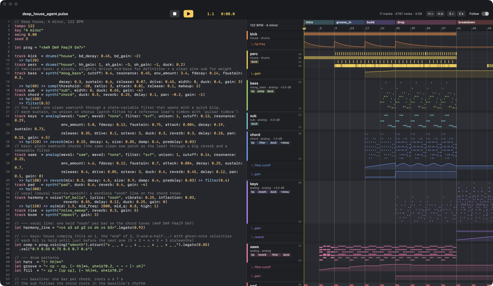

Pulsar is a small, readable music language and a studio-grade synthesis engine. An AI model writes a song, renders it, reads a mix report instead of listening — and iterates until it sounds right.

Every sound is synthesized: drums, basses, chords, leads, even the vocal. The first track was composed by a fresh AI agent given only the language reference; it rendered six times and used the mix report to fix its balance and energy arc.
Rhythms use TidalCycles-style mini-notation, wrapped in a tiny conventional syntax: tracks, sections that extend each other, play, automate, arrange — plus variables, functions, lambdas, loops and conditionals.
Am9, Fmaj7) and roman numerals in the song's key, with smooth voice-leading.tempo 122 key "A minor" track kick = drums("house") track bass = synth("moog_bass", duck: 0.6) >> comp(ratio: 3) track pad = synth("pad", reverb: 0.4, duck: 0.6) let prog = "<Am9 Dm9 Fmaj9 Em7>" section intro 8 { play kick "bd*4, [~ hh]*4" play pad prog.voicing("smooth") automate pad.cutoff 0.25 -> 0.5 } section drop 16 extends intro { play kick "bd*4, ~ cp ~ cp, [~ hh]*4" play bass "<a1 d2 f1 e1>".struct("x ~ ~ x ~ ~ x ~") } arrange intro, drop, drop
Pulsar renders every note individually at 96 kHz through Faust DSP compiled to native code, places it sample-exactly, and masters the result to a loudness target.
Band-limited oscillators with unison and drift through Moog ladder, TB-303 diode, Korg MS-20 and Oberheim SEM filter models. Plus FM and Karplus-Strong engines.
Every preset is loudness-calibrated with a balanced fader, so a song that only picks presets already sits right in the mix.
Zita reverb, ping-pong delay, sidechain ducking, glue compression, a 4× oversampled soft clipper and a true-peak limiter.
54 local Kokoro voices that sing on your melody (whole phrases, formants preserved, landing on the beat) or speak lines in time — from lyrics to wordless "oooh"s.
Pitch, slice, gate and fit any audio file to the grid — one-shots, loops and chops.
pulsar timbre fits a synth patch or drum voice to a recording you own; pulsar match tunes a mix toward a reference's tonal balance.
A model can't listen, so every render tells it what an engineer would hear: loudness, true peak, tonal balance per band, stereo image, the energy arc of each section, per-track levels, frequency masking between tracks — and concrete fixes.
Match a reference you own with pulsar compare and pulsar match, or fit a synth patch to a recording's timbre with pulsar timbre.
loudness -10.0 LUFS true peak -1.0 dBTP crest 10.2 dB spectrum: sub +0 bass -1 low_mid -3 mid -11 presence -17 stereo: correlation 0.93, width 0.19 energy arc: intro bar 0 -12.1 LUFS drop bar 24 -8.8 LUFS breakdown bar 40 -14.0 LUFS drop2 bar 64 -8.5 LUFS tracks: kick peak -3.9 dB rms -20.8 dB mostly sub keys peak -5.2 dB rms -25.6 dB mostly low_mid - chord and keys both peak in the low_mid band and may mask each other; separate them by octave, eq, or pan
A native editor with an Ableton-style arrangement beside it. Type on the left; the right side recompiles as you go and shows every channel the way it will play.
An MCP server exposes referencecheckrenderanalyze_fileplay so Claude or any MCP client can compose, render, read the report and revise in a loop.
# give Claude Code a music studio claude mcp add pulsar -- /path/to/pulsar/.venv/bin/pulsar mcp # or drive it yourself pulsar docs # the reference, ready for a prompt pulsar check song.pulse pulsar render song.pulse -o song.mp3 pulsar render song.pulse --only drop # fast iteration
Python 3.10+ on macOS or Linux. ffmpeg for MP3 export. The Studio app needs only the Xcode command line tools.
git clone https://github.com/ronreiter/pulsar && cd pulsar uv venv --python 3.12 .venv && uv pip install --python .venv/bin/python -e ".[mcp,dev]" .venv/bin/pulsar render examples/deep_house_agent.pulse --play app/build_app.sh && open "app/build/Pulsar Studio.app"